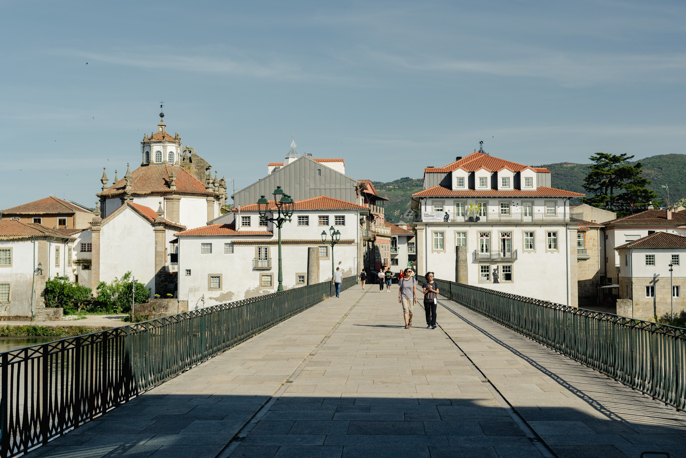
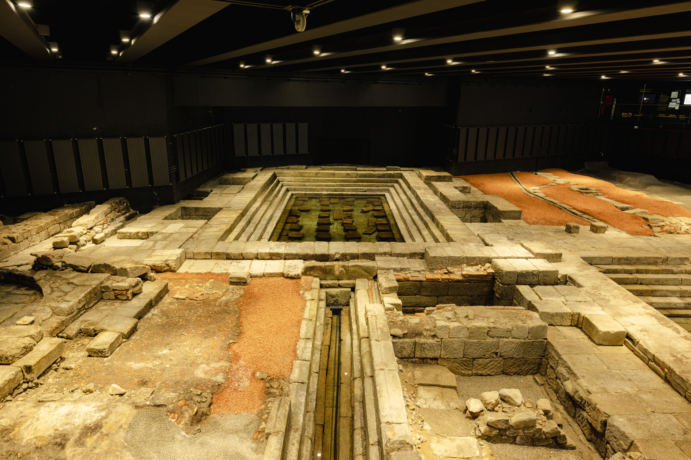

Dia Internacional de Monumentos e Sítios assinalado em Chaves
19.04.2024

Uma procura cada vez mais elevada
2023 foi o melhor ano de sempre nas Termas de Chaves, houve um crescimento no número de dormidas no concelho e o Museu Termas Romanas Chaves já registou 160 mil visitantes desde a abertura.
Numa reportagem do Canal Ntv, Nuno Vaz, Presidente do Município de Chaves, dá a conhecer alguns dados relevantes e mostra porque Chaves é e vai continuar a ser um destino de eleição de muitos aquistas e turistas.
Veja aqui a reportagem completa…
